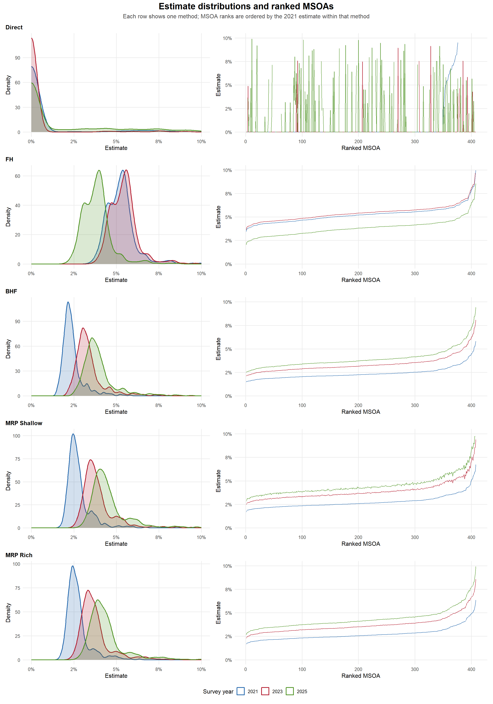
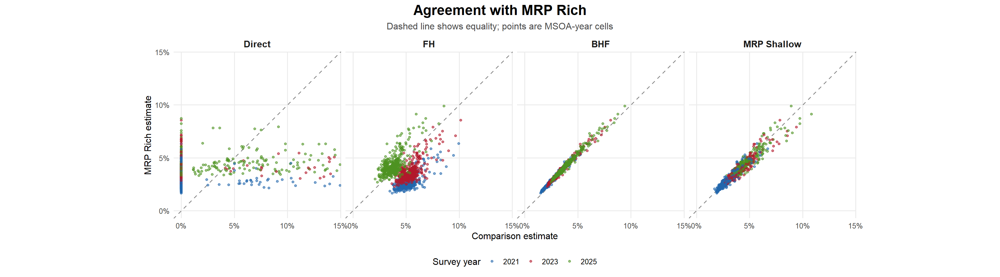

This comparison focuses on the trade-offs between direct estimation, area-level SAE, unit-level SAE, and poststratified unit-level SAE. The diagnostics compare the scale and smoothness of the estimates, agreement between methods, external validation residuals, uncertainty, and local residual structure used by the models.
1 Method Trade-Offs
Method
Main input
Main trade-off
Direct
Survey-weighted area-time estimates
Preserves the survey design most directly, but sparse MSOA-year cells can be unstable or missing.
FH
Weighted direct estimates and sampling variances
Uses the survey design through the direct estimates, but inherits their sparsity and degenerate variance issues.
BHF
Respondent records with unit-level predictors
Uses individual outcomes directly, but the fitted likelihood does not use survey weights.
MRP Shallow
Respondent records plus age-sex population cells and contextual predictors
Adds population reweighting, but only over the available poststratification cells.
MRP Rich
Respondent records plus age-sex-car population cells
Gives the closest alignment between model predictors and population composition, but holds the 2021 poststratification structure across later waves.
The distribution and rank plots show how much each method changes the spread of MSOA-year estimates. Direct estimates retain the most cell-level jaggedness, while the model-based approaches borrow strength across areas, years, predictors, or poststratification cells.

3 Method Agreement
MRP Rich is used here as a modelling reference because it uses the fullest poststratification structure available in the workflow. It is not an external benchmark; disagreement with it indicates how much the other methods differ from the richest unit-level specification.

4 External Validation Residuals
The validation benchmark is the Census bicycle-to-work share. It is related to frequent cycling for transport but does not measure the same target outcome, so the residuals should be read as a directional comparison rather than a direct accuracy test.
Interval width shows the precision gained or lost by each method. Direct-estimate widths reflect design-based sampling variance, while model-based widths reflect posterior uncertainty after borrowing strength across areas, years, predictors, or population cells.